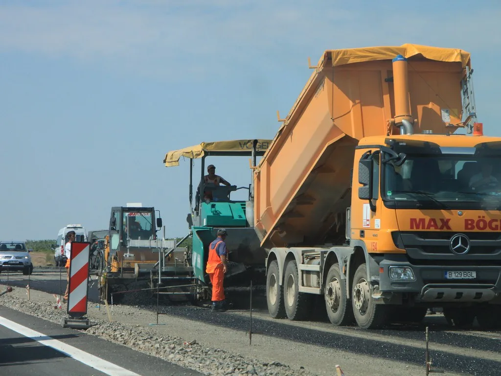
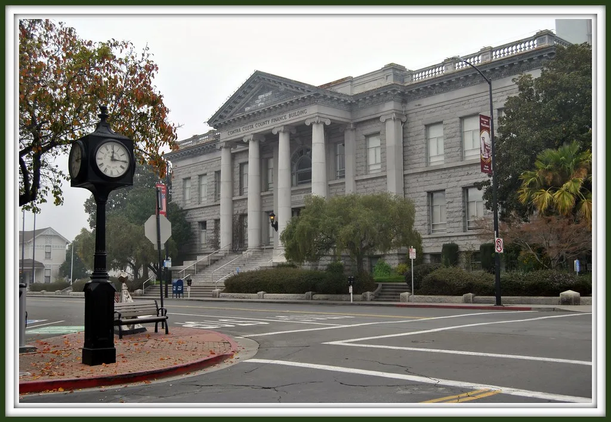

원희룡 전 장관, 2차 종합특검 첫 소환조사…'양평고속도로 의혹'
서울-양평고속도로 노선 변경 의혹을 수사하는 2차 종합특별검사팀이 원희룡 전 국토교통부 장관을 처음으로 불러 조사했다. 원 전 장관은 7월 23일 오전 9시 46분경 경기 과천시에 마련된 특검 사무실에 직권남용권리행사방해 혐의 피의자 신분으로 출석했다. 국토부 장관 재임 시절의 결정을 놓고 특검 조사를 받는 것은 이번이 처음으로, 여야 모두 조사 결과에 촉각을 곤두세우고 있다.
이번 의혹의 발단은 2023년 5월로 거슬러 올라간다. 국토교통부는 당시 서울-양평고속도로의 종점을 경기 양평군 양서면에서 강상면으로 바꾸는 방안을 검토했는데, 강상면 일대에는 김건희 여사 일가 소유의 토지가 있는 것으로 알려져 특혜 논란이 불거졌다. 원안이었던 양서면 종점 노선은 2021년 한국개발연구원의 예비타당성조사까지 마친 상태였다는 점에서, 노선 변경의 배경에 의문이 제기돼 왔다.

논란이 커지자 국토부는 노선 변경 계획을 백지화하겠다고 선언한 바 있다. 그러나 특검팀은 백지화를 선언하는 과정에서 법 위반 소지가 있다는 내부 법률 자문을 받고도 이와 배치되는 내용의 보도자료를 배포했다고 보고, 이 과정 전반에 원 전 장관의 직권남용이나 윗선 개입이 있었는지를 집중적으로 들여다보고 있다.
원 전 장관은 조사에 앞서 취재진과 만나 "1년 넘게 고속도로 특혜를 추진했다고 수사하다가 도저히 안 되니 이제 와서 수사 대상을 백지화 선언으로 바꾸는 모양"이라며 특검 수사 방향에 강한 불만을 나타냈다. 그러면서 "마음대로 그림을 그려 보라만, 위법 사실이 없기 때문에 의도대로 잘 안 될 것"이라고 말해 혐의를 전면 부인하는 입장을 재확인했다.

특검팀은 원 전 장관에게 두 차례 출석을 통보했으나 이른바 '폐문부재'로 서류가 송달되지 않자, 지난 15일 강제수사에 착수한 것으로 파악됐다. 이번 조사에서는 노선 변경과 백지화 선언이 이뤄진 시점 전후로 원 전 장관이 김건희 여사 일가의 토지 소유 사실을 언제 인지했는지가 핵심 쟁점으로 다뤄질 전망이다. 특검팀은 이날 확보한 진술과 기존 국토부 내부 문건, 관계자 진술 등을 종합해 원 전 장관을 비롯한 관련자들의 형사처벌 대상 여부를 검토할 방침이며, 향후 추가 소환 조사나 강제수사가 이어질 가능성도 배제할 수 없다.
정치권에서는 이번 사건이 김건희 여사 관련 여러 의혹 가운데 국책사업 특혜 여부를 직접 다투는 사안이라는 점에서 파장이 만만치 않을 것이라는 관측이 나온다. 여당은 특검 수사를 통한 진상규명을 촉구하는 반면 야당은 정치적 표적 수사라는 입장을 밝히고 있어, 조사 결과에 따라 여야 간 공방이 한층 격화할 것으로 전망된다.
법조계에서는 원 전 장관이 국토교통부 장관으로서 노선 변경 검토 보고를 받았는지, 나아가 백지화 발표 시점과 방식을 직접 결정했는지가 이번 수사의 핵심 갈림길이 될 것으로 보고 있다. 특검팀은 노선 변경 검토 당시 작성된 내부 보고서와 회의록, 관련 부서 간 연락 기록 등을 추가로 확보해 의사결정 과정 전반을 재구성하는 작업도 병행하고 있는 것으로 전해졌다. 수사 결과가 이르면 다음 달 중 윤곽을 드러낼 수 있다는 전망도 나오지만, 특검 측은 아직 구체적인 수사 종료 시점을 밝히지 않고 있다.